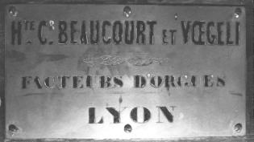
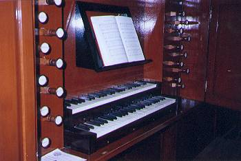
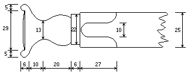
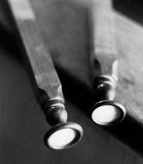
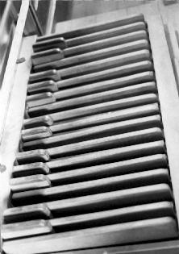
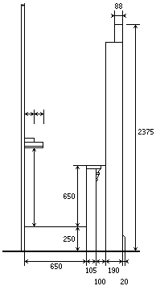
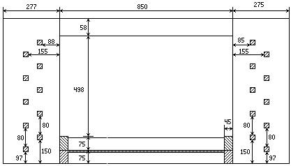
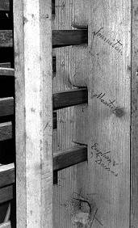

Grand Temple de l'Église Réformée
La console
Généralités. |
|



Plaque vissée au dessus de la consoleLa console est de type en fenêtre. Elle a considérablement été modifiée par Maurice Puget mais la restauration de 1992 a permis de la reconstituer à peu près dans son état d'origine. Une plaque en laiton à l'effigie des facteurs constructeurs est vissée au dessus des claviers (voir photo). On sait que Beaucourt et Voegeli avaient l'habitude de signer leurs instruments en gravant les écussons ogivaux des tuyaux de façade de façon à ce que leur pointe dessine une sorte de fleur de lys. La plaque de la console comporte un dessin décoratif, manifestement gravé à la main, dans lequel on peut aussi remarquer deux petites fleurs de lys gravées de part et d'autre de l'ornementation.

Les claviersLors de la restauration de 1992, l'encadrement de l'ancienne console a été retrouvées sur la tribune. Les portes fermant la fenêtre ont donc pu être reconstituées sans encombre. La largeur des claviers primitifs, enlevés par Maurice Puget, a pu elle aussi être reconstituée grâce à la traverse les soutenant qui a été sectionnée, mais qui se trouvait encore dans l'intérieur de l'instrument. La planche destinée à recevoir le pupitre ainsi qu'à fermer la fenêtre de la console n'est pas d'origine ; considérablement remaniée par Maurice Puget, elle a été reconstruite en 1992. Les panneaux à travers lesquels passent les registres sont en sapin mais sont plaqués de 6 mm. de chêne
Les bras des claviers sont recouverts d'un placage de palissandre Un axe central se trouve sous le devant de chaque touche. La suspension des touches est faite au milieu de celles-ci. L'accrochage est assuré à travers une pièce de cuir épais collée dans l'épaisseur de la touche, le tout solidarisé par une petite cheville en laiton.
 Vue géométrale d'un bouton de registre
Les tirants de registres sont en chêne carré (25 × 25) ; leurs boutons sont tournés en noyer et teinté pour imiter le palissandre.
La partie avant de ces boutons est recouverte d'une étiquette en papier sur laquelle est inscrit, à l'encre de Chine, le nom du jeu.
Les jeux de Pédale et de Récit sont notés en rouge par oppositions à ceux du Grand-Orgue, en noir. Le tout est protégé par une lentille de verre enchâssée dans le bois du bouton. Le travail est réalisé avec beaucoup de soin.
Il faut, à propos de ces tirants s'étendre un peu plus : en 1853, lors de la conception de l'instrument, Beaucourt et Voegeli ont prévu l'orgue de Saint-Hippolyte comme un instrument à deux claviers. L'idée de départ était d'installer un orgue comportant probablement 14 jeux et pourvu d'un Grand-Orgue et d'un Récit, peut-être expressif. Afin de parer la console d'un effet esthétique présentable, nos facteurs - outre les tirants du grand orgue et de la pédale - installèrent de faux tirants à la place de ceux prévus pour le récit.
 Tirants de registres démontés
Ces faux tirants étaient composés de boutons, identiques à ceux des vrais tirants, et d'un départ en bois suffisamment long pour rentrer de quelques centimètres dans la console.
Outre les deux qu'il à réutilisés pour son Récit, Maurice Puget utilisa les faux tirants qui se trouvaient sur la console et j'ai pu en retrouver un autre, oublié à l'intérieur du buffet. Il est marqué " Flûte douce 8 p ". Voyant cela, j'ai délicatement décollé les étiquettes de Puget. On pouvait encore y lire les noms de " Haut-Bois " sur l'un d'eux et l'on devinait les mots " Voix-Humaine " sur l'autre. La Voix- Humaine était très difficile à lire mais il n'y avait néanmoins aucun doute sur l'inscription. J'ai également décollé les étiquettes " Quinte " et " Doublette " posées par Puget pour retrouver respectivement les noms de " Fourniture " et de " Flûte 4 p ". Bien entendu, ce dernier jeu, coupé en basse et dessus, correspond à ce que j'ai par ailleurs nommé Bourdon de quatre pieds.
|  |  | |
|
Le pédalier de Maurice PUGET. Le pédalier est celui commandé par Maurice PUGET en Allemagne ; il est en chêne, droit, à l'allemande et n'a été conservé qu'à la demande la paroisse, propriétaire de l'instrument. |
Vue de côté de la console. On y voit le plancher, la coupe de la tribune et du positif postiche. Afin de préserver une certaine clarté, le pédalier ainsi que les tirants de registres ne sont pas dessinés. Le plancher en sapin surélève l'organiste de 250 mm. Il pénètre dans le corps de l'instrument sur une profondeur de 445 mm. |
| Nom : | Grand-Orgue |
|---|---|
| Nombre de note : | 54 |
| Division de l'octave : | 165 mm. |
| Mécanique : | Suspendue |
| Plaquage : | os |
| Nom : | Récit |
|---|---|
| Nombre de note : | 42 |
| Nombre de touches : | 54 (la première octave est seulement décorative) |
| Division de l'octave : | 165 mm. |
| Mécanique : | Suspendue |
| Plaquage : | os |
| Nom : | Pédale |
|---|---|
| Nombre de note : | 18 |
| Nombre de touches : | 30 (l'octave aiguë est en tirasse seulement) |
| Plaquage : | palissandre (uniquement pour les dièses) |
|
 Vue de face de la console avec ses deux claviers actuels et ses deux panneaux percés pour le passage des tirants de jeux. |
 Arrière du panneau de la console (côté C, avant restauration) |
|
On voit clairement les inscriptions Fourniture, Montre 8 et Euphon 8 Dessus inscrites au crayon. |
|
| Disposition des tirants de registres | Sommaire |